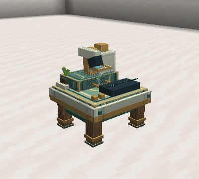

Genetic Station
Analyze a captured individual without releasing it. The handheld analyzer remains available for live slimes.

Recipe
I G I
R A R
I I I
I = iron ingot; G = glass; R = redstone; A = Genetic Analyzer. Item ID: slimeevolution:genetic_station.
Operation
- Insert an occupied capsule in the first slot.
- Insert paper and redstone in the following slots.
- As the individual's caretaker, press Analyze.
- After 100 loaded ticks, press View genes.
- Remove the capsule to transport or release the slime.
Analysis consumes one paper and one redstone only on completion. At 20 ticks per second, a cycle takes five seconds. Removing ingredients pauses progress; replacing them resumes it. Changing or removing the individual cancels without charging. Inserting items alone does not start work.
The completed reading remains available while the same valid capsule stays in the station; reopening it does not charge again. A new analysis session requires ingredients after the capsule is removed and that removal is processed. Research remains in the player's Slimepedia.
The inspection shows captured health, needs, age, alleles, lineage, and evolution progress. The slime does not age, eat, breed, or mutate in the station. Removing the capsule, losing block access, or leaving range closes the inspection. The monitor animates during processing and stops when paused or complete.